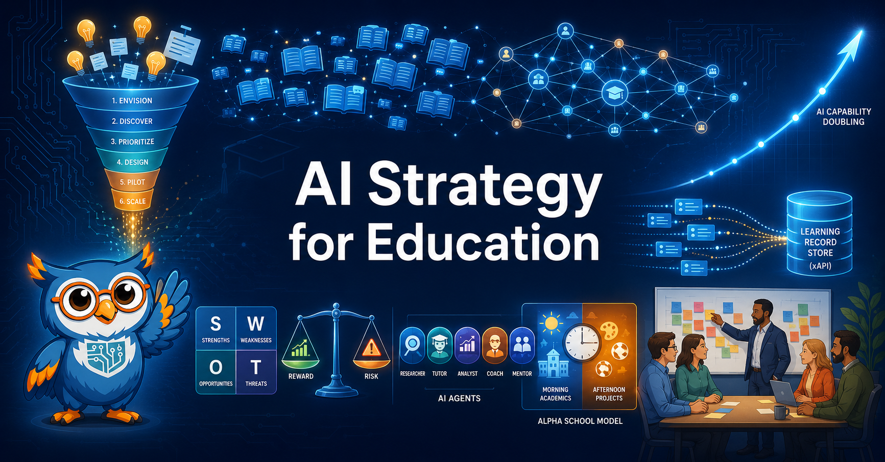

AI Strategy for Education¶

A free, open-source intelligent textbook for K-12 and higher-education leaders.
Artificial intelligence is improving on an exponential curve — the length of task a frontier model can complete autonomously has doubled roughly every four to seven months for six straight years. This course exists because the gap between what AI can do and what our institutions are organized to use is widening every quarter. It gives education leaders a disciplined, repeatable way to close it.
This is not a coding course and not a hype tour. It is a strategy course — built around a single, repeatable decision-making workflow that any school, district, college, or university can run: gather ideas, evaluate them, select a portfolio of projects, assign resources, and measure results. Every opportunity is paired with equal weight on the hazards — privacy, bias, equity, and the risks of moving too fast or too slowly.
Book at a Glance¶
| Chapters | 13 |
| Concepts in the Learning Graph | 221 |
| Glossary Terms | 214 |
| FAQ Questions | 63 |
| Chapter Quizzes | 13 (195 questions total) |
| Annotated Reference Lists | 13 |
| Diagrams and Visual Elements | 30 |
| Equivalent Printed Pages | ~580 |
| License | CC BY-NC-SA 4.0 — free to use |
What You Will Learn¶
This book works through six core capabilities every education institution needs:
- Read the capability curve — interpret the METR task-horizon data and understand why AI capabilities require a different kind of planning than most technology trends.
- Run the idea funnel — systematically gather, evaluate, and select AI projects from teachers, staff, students, and families.
- Understand the intelligent-textbook landscape — what 10,000 AI-tutored textbooks means for procurement, curriculum, and the teacher's role.
- Build learning telemetry — how xAPI, the Learning Record Store, and an AI-driven LMS combine to produce individualized learning plans for every student.
- Manage risk and equity — build a risk register, run a SWOT analysis, and make the case for equitable AI adoption to your board.
- Write a board-ready strategy — the capstone project is a draft AI strategy document ready to present to a school board or board of trustees.
Chapters¶
Supporting Resources¶
| Resource | Description |
|---|---|
| Glossary | 214 plain-language definitions for every key term |
| FAQ | 63 questions and answers organized by topic |
| Learning Graph | Interactive visualization of 221 concept dependencies |
| Course Description | Full course overview, learning outcomes, and Bloom's Taxonomy alignment |
| About | Author bio, motivation, and how to cite this book |
Each chapter also includes:
- A quiz (15 questions, collapsed answers) for self-assessment
- An annotated reference list (10–13 curated sources) for deeper reading
Who This Book Is For¶
This textbook was written for decision-makers and stakeholders across the full education system — no technical background required. Every term is defined before it is used. If you are any of the following, this book was written for you:
- Superintendent, principal, or curriculum director evaluating AI tools or policies
- Classroom teacher trying to understand how AI will reshape your role
- K-12 school board member voting on AI budgets or policies
- Higher-education provost, dean, CIO, or faculty senate member
- Parent or community member who wants to understand what AI means for your children's school
- Instructional designer or IT staff responsible for implementing AI initiatives
How to Use This Book¶
Read chapters in order — concepts build on each other, and the learning graph ensures prerequisites are always introduced before they are needed. Use the search bar at the top to jump to any term. When you encounter an unfamiliar word, check the Glossary. When you want to see how a concept connects to the rest of the course, visit the Learning Graph.
Each chapter ends with a quiz — try to answer without looking, then expand the collapsed answers to check.
Sage's Tip
 Start with Chapter 1 to build your vocabulary — every strategy conversation in this book depends on having shared, precise language. If you already work in EdTech and know your LLMs from your LMSs, you can skim Chapter 1 and jump to Chapter 2, where the capability-curve data gets genuinely surprising. Let's chart the course!
Start with Chapter 1 to build your vocabulary — every strategy conversation in this book depends on having shared, precise language. If you already work in EdTech and know your LLMs from your LMSs, you can skim Chapter 1 and jump to Chapter 2, where the capability-curve data gets genuinely surprising. Let's chart the course!